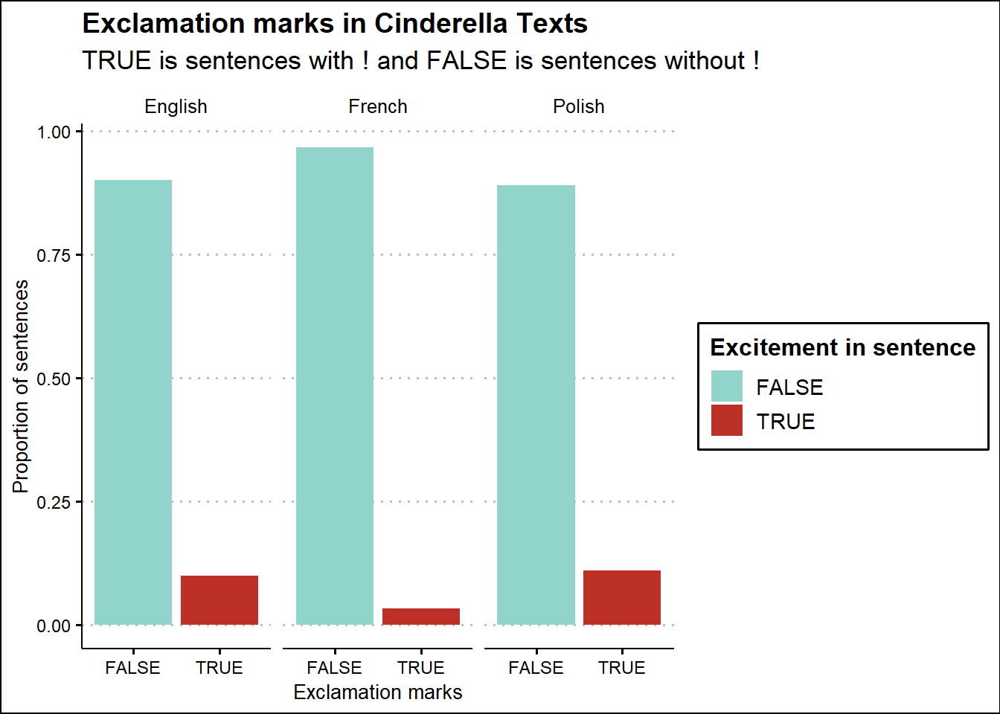

# Finding the number and proportion of vowels in a sentence
# for each book
eng_vowel <- english_cinderella |>
mutate(num_vowels = str_count(word, "[aeiouy]"),
prop_vowels = num_vowels/(str_count(word)))
french_vowel <- french_cinderella |>
mutate(num_vowels = str_count(word, "[aeiouyéèêëàùç]"),
prop_vowels = num_vowels/(str_count(word)))
polish_vowel <- polish_cinderella |>
mutate(num_vowels = str_count(word, "[aeiouyąęóśćźł]"),
prop_vowels = num_vowels/(str_count(word)))
all_vowels <- rbind(eng_vowel, french_vowel, polish_vowel)Mini Project 4
Understanding Cinderella’s Origins
There are many adaptations of Cinderella’s story in European folklore but we are most familiar with the French version published in 1697 by Charles Perrault. That version was the foundational piece of literature behind the Disney adaptation of Cinderella. Cinderella’s popularity has endured the test of time and is still revered as a classic tale for children around the world. To be accessible to audiences around the world, publishers hire translators to translate the original source material to other languages using the appropriate syntax. This explains why translations differ from language to language and even occasionally, from translator to translator. This project uses text analysis for the Cinderella tale in three languages: French, English and Polish to examine whether there are distinguishable differences between the stories.
Folklore written by Michalopoulos and Xue (2021) concluded that (1) societies with tales portraying men as dominant and women as submissive relgate women to subordinate positions, (2) more risk-averse and less entrepreneurial people grew up listening to stories wherein competitions and challenges are more likely to be harmful, and (3) communities with low tolerance toward antisocial behavior are more trusting. This paper exmaines unique folklore in cultures to see what effect they have on their population but it may be interesting to study how translations of one story shape interpretations of its moral lessons across cultures.
Vowel Analysis
Vowels are sounds that can be made with an open vocal tract which contrasts with consonants which have a closure along the vocal tract. During the Romantic period, sound patterns played a key role in literature, especially poetry. By analyzing the number of vowels in each sentence by book to get the proportion of vowels, we see slight differences in how the sentences sound because they have varying levels of vowels. Sentences with a higher proportion of vowels will be expressed differently sonically.
library(wesanderson)Warning: package 'wesanderson' was built under R version 4.4.2all_vowels |>
group_by(title) |>
ggplot(aes(x = num_vowels, y = prop_vowels, color = title)) +
geom_point(size = 2, alpha = 0.75) +
geom_smooth(method = "lm", se = FALSE) +
scale_color_manual(values = wes_palette("Darjeeling1")) +
theme_clean() +
labs(x = "# of vowels per sentence",
y = "Proportion of vowels in a sentence",
title = "Vowel Analysis by Cinderella Text",
subtitle = "Total number of vowels per sentence vs. proportion of vowels in sentence",
color = "Cinderella Text") `geom_smooth()` using formula = 'y ~ x'This visualization has the number of vowels per sentence on the x-axis and the proportion of vowels on the y-axis, color coded by the text language. The English language has the lowest proportion of vowels in a sentence compared to French and Polish. The Polish language has the highest proportion of vowels yet it has the same range for the number of vowels in a sentence. The vowel analysis for the French language is interesting because it has the greatest range in number of vowels per sentence which could explain some of its outliers for the proportion of vowels in a sentence.
Most Popular Words in Cinderella
These plots visualize the highest frequency words in each of the texts. The bar plots are a static visualization for the words with the highest frequency while the wordcloud is interactive and gives a precise count of the appearance when you hover over the word.
tidy_polish <- polish_cinderella |>
mutate(line = row_number()) |>
unnest_tokens(word, word, token = "words") |>
mutate(word2 = fct_collapse(word, "kopciuszek" = c("rózia", "kopciuszek", "kopciuszku"))) |>
anti_join(polish_stopwords) |>
count(word2, sort = TRUE)Joining with `by = join_by(word)`french_tidy <- french_cinderella |>
mutate(line = row_number()) |>
unnest_tokens(word, word, token = "words") |>
anti_join(french_stopwords) |>
count(word, sort = TRUE)Joining with `by = join_by(word)`tidy_english <- english_cinderella |>
mutate(line = row_number()) |>
unnest_tokens(word, word, token = "words") |>
anti_join(english_stopwords) |>
count(word, sort = TRUE) Joining with `by = join_by(word)`# Creating plots with a count of the number of times the most popular words are
# used in the text
polish_cinderella |>
# Creating a new line for rownumber
mutate(line = row_number()) |>
# Seperating sentences into words for word analysis
unnest_tokens(word, word, token = "words") |>
anti_join(polish_stopwords) |>
# Count of the number of times a word appears
count(word, sort = TRUE) |>
# Top 20 words
slice_max(n, n = 20) |>
ggplot(aes(fct_reorder(word, n), n)) +
geom_col(fill = "dodgerblue") +
coord_flip() +
theme_clean() +
labs(x = "Words in Polish Translation",
y = "Count of Appearance in Text",
title = "Most Popular Words in Polish Translation of Cinderella",
subtitle = "Without the fct_collapse for Cinderella-adjacent terms")Joining with `by = join_by(word)`tidy_polish |>
slice_max(n, n = 20) |>
ggplot(aes(fct_reorder(word2, n), n)) +
geom_col(fill = "plum3") +
coord_flip() +
theme_clean() +
labs(x = "Words in Polish Translation",
y = "Count of Appearance in Text",
title = "Most Popular Words in Polish Translation of Cinderella")
french_cinderella |>
mutate(line = row_number()) |>
unnest_tokens(word, word, token = "words") |>
anti_join(french_stopwords) |>
count(word, sort = TRUE) |>
slice_max(n, n = 20) |>
ggplot(aes(fct_reorder(word, n), n)) +
geom_col(fill = "lightpink") +
coord_flip() +
theme_clean() +
labs(x = "Words in Original French",
y = "Count of Appearance in Text",
title = "Most Popular Words in Original French Cinderella")Joining with `by = join_by(word)`tidy_english |>
slice_max(n, n = 20) |>
ggplot(aes(fct_reorder(word, n), n)) +
geom_col(fill = "lightblue") +
coord_flip() +
theme_clean() +
labs(x = "Words in English Translation",
y = "Count of Appearance in Text",
title = "Most Popular Words in English Translation of Cinderella")
We see that once we combine appearances of “kopciuszek” and “rozia” together in the Polish translation, the most popular word among all of texts is Cinderella. The Polish translation is interesting in that Cinderella (Kopciuszek) is a mean-spirited nickname given to her while Rozia is her birth name. It is interesting that we find out Cinderella’s birth name in the Polish translation of the tale and see the narrator refer to her by her birth name. The kopciuszek/rozia observation was eye-catching because when we include word rozia, the Polish Cinderella is the only translation that does not have “Cinderella” as the most common word despite both “kopciuszek” and “rozia” being used as her name. There are certainly arguments in support and against highlighting the appearance of rozia in the text. Otherwise, the translations share a lot of the same words such as “godmother,” “sisters,” “ball,” “kitchen,” “ash/cinder,” “king,” and “slipper.” However, the frequency in which the words appear is not the same across translations. “Beautiful” is a highly-used word in all of the translations but the amount of times it appears in the French text is much higher than the others. A linguist could make valuable observations based on which words/themes appear more commonly in some translations of classic childrens stories than others.
#Wordcloud for original French text
words_french <- french_tidy |>
slice_head(n = 200) |>
data.frame()
wordcloud2(
words_french,
size = .25,
shape = 'circle'
)Sentiment Analysis
Sentiment analysis takes words and sorts them as either having a “positive” or “negative” sentiment. The English sentiment lexicons are built out in R with different options (bing, nrc, afinn) to analyze words in the text. The French lexicon was found through a GitHub repository which resembled the bing classification in the get_sentiments function. In this analysis, we compare the sentiments for the French and English versions of Cinderella because the Polish lexicon is not nearly as built out.
# Read in French sentiment lexicons from GitHub
lexicon_fr_neg <- readLines("negative_words_fr.txt") |>
as_tibble(word = lexicon_fr_neg) |>
mutate(sentiment = "negative")
lexicon_fr_pos <- readLines("positive_words_fr.txt") |>
as_tibble(word = lexicon_fr_pos) |>
mutate(sentiment = "positive")
french_lexicon <- rbind(lexicon_fr_pos, lexicon_fr_neg)
# Using the french lexicon
french_tidy |>
# Join with lexicon using common variable
inner_join(french_lexicon, by = c("word" = "value")) |>
# Creating a group of highest sentiments
group_by(sentiment) |>
slice_max(n, n = 5) |>
ungroup() |>
# Making a plot for sentiment analysis
ggplot(aes(x = fct_reorder(word, n), y = n, fill = sentiment)) +
geom_col() +
scale_fill_manual(values = wes_palette("Moonrise3")) +
coord_flip() +
theme_clean() +
labs(y = "Count of appearance in text",
x = "Words from original French text",
fill = "Sentiment",
title = "Sentiment Analysis for Original French")
english_lexicon <- get_sentiments(lexicon = "bing")
tidy_english |>
inner_join(english_lexicon) |>
group_by(sentiment) |>
slice_max(n, n = 5) |>
ungroup() |>
ggplot(aes(x = fct_reorder(word, n), y = n, fill = sentiment)) +
geom_col() +
scale_fill_manual(values = wes_palette("Zissou1")) +
coord_flip() +
theme_clean() +
labs(y = "Count of appearance in text",
x = "Words from English translation",
fill = "Sentiment",
title = "Sentiment Analysis for English Translation")Joining with `by = join_by(word)`The English version of the sentiment analysis shows that there is a higher number of negative sentiment words but the positive sentiment words have a higher frequency. On the other hand, the French version has a higher number of positive sentiment words and a higher frequency. Therefore, we can conclude that there is generally a more positive sentiment in the French version of Cinderella as opposed to the English one.
Progression of Story
Stories can feel fast-paced or not depending on the number of words chosen and the placement of lengthier sentences. Word choice matters but the length in which it is all read plays a significant role as well. I wanted to look at the lengthiest parts of the book (the chapters with the highest number of words) and see where they were located.
# Creating a dataframe with a variable that does not have -- and setting up an index
# for a chapter to have 9 lines
polish_cinderella <- tibble(word = cinderella_pl) |>
mutate(title = "Polish",
word2 = str_replace_all(word,"--", ""),
linenumber = row_number(),
index = linenumber %/% 9) |>
select(word2, linenumber, index, title)
english_cinderella <- english_cinderella |>
mutate(word2 = str_replace_all(word,"--", ""),
linenumber = row_number(),
index = linenumber %/% 9,
title = "English") |>
select(word2, linenumber, index, title)
french_cinderella <- french_cinderella |>
mutate(word2 = str_replace_all(word,"--", ""),
linenumber = row_number(),
index = linenumber %/% 9,
title = "French") |>
select(word2, linenumber, index, title)
cinderella <- rbind(polish_cinderella, french_cinderella, english_cinderella)
# Using the data frame with all of the other data frames
cinderella |>
# Grouping indexes by titles
group_by(title, index) |>
# Finding the number of words using str_count
mutate(word_count = str_count(word2, "\\b[^ ]+\\b")) |>
# Count of total words in the index
summarize(index1 = sum(word_count)) |>
# Creating a plot that is faceted by title
ggplot(aes(x = index, y = index1, fill = title)) +
geom_col() +
facet_wrap(~title) +
scale_fill_manual(values = wes_palette("Zissou1")) +
theme_clean() +
labs(title = "Word Count by Chapter in Each Book",
x = "Chapter",
y = "Count of words in chapter",
color = "Language of book")`summarise()` has grouped output by 'title'. You can override using the
`.groups` argument.We hope to understand the number of words in each chapter to compare the books by their length and the points during the book (beginning, middle, and end) in which they are the most “lengthy.” The English translation has a U-shape that shows the beginning and end as being the most “wordy.” The French shows the opposite, with the bars in the middle supporting the claim that the middle of the French Cinderella story is longer than other parts in the book. Surprisingly, the Polish version of Cinderella is fairly consistent in the number of words for its chapters from beginning to end. We can gather that the different parts of each book have the most words/feel wordy and it is not uniform across all languages.
Punctuation Marks in Cinderella
Punctuation marks are important to storytelling. The number of exclamation marks and question marks dictates the tone of the story. By examining the occurrence of these punctuation marks, we can see moments of excitement or confusion reflected in the story.
# Creating a new data frame called punct_marks to include excitement and confusion
# the measure for this was whether the sentence began or ended with a ! or ?
punct_marks <- cinderella |>
mutate(excite = str_detect(word2, "!$"),
confuse = str_detect(word2, "\\?$"))
punct_marks |>
group_by(title, excite) |>
count(excite) |>
filter(!is.na(excite)) |>
ungroup() |>
group_by(title) |>
# Creating new variables to find the total amount of TRUE and FALSE values for
# presence of exclamation points
mutate(total = sum(n),
prop = n/total) |>
# Making a ploy with excitement on the x-axis, proportion on the y, with title as a fill
ggplot(aes(x = excite, y = prop, fill = excite)) +
geom_col() +
facet_wrap(~title) +
theme_clean() +
scale_fill_manual(values = wes_palette("FrenchDispatch")) +
labs(title = "Exclamation marks in Cinderella Texts",
subtitle = "TRUE is sentences with ! and FALSE is sentences without !",
x = "Exclamation marks",
y = "Proportion of sentences",
fill = "Excitement in sentence")
This graph shows the proportion of exclamation marks in sentences by book to reveal that the French have a lower proportion of sentences with exclamation points than Polish and English. The English and Polish translations are pretty evenly matched with the proportion of sentences with exclamation points.
punct_marks |>
# Taking out NAs
filter(!is.na(excite)) |>
# Linenumber on the x with the title on the y (language text), colored by the presence
# of exclamation marks
ggplot(aes(x = linenumber, y = title, color = excite)) +
geom_point(size = 2, alpha = 0.5) +
theme_clean() +
scale_color_manual(values = wes_palette("FrenchDispatch")) +
labs(y = "Language of Cinderella Text",
title = "Tracking Where ! Occurs in Each Book",
subtitle = "Each point is a line in the book",
x = "Linenumber",
color = "Excitement in sentence")There is a delicate balance writers/translators need to maintain in working with exclamation marks. If you use too many, the excitement is watered down. Using them sparingly might stick out more to readers than writers may intend them to. With this in mind, I wanted to analyze how often a sentence appears with an exclamation mark by having each point represent a sentence. The blue/green points represent the sentences without exclamation marks and the red points are sentences with an exclamation mark. Visually, we see that the French version has very few red points which indicates that exclamation points are not used frequently in this Cinderella story. Sentences that have exclamation marks in the English translation tend to occur near each other while the Polish translation has nearly equidistant spaces in between each other. The key takeaway is that the translations of the original French use exclamation points more than the original text.
# This code is nearly identical to the exclamation mark code except it is for
# question marks in each line for the books
punct_marks |>
group_by(title, confuse) |>
count(confuse) |>
filter(!is.na(confuse)) |>
ungroup() |>
group_by(title) |>
mutate(total = sum(n),
prop = n/total) |>
ggplot(aes(x = confuse, y = prop, fill = confuse)) +
geom_col() +
facet_wrap(~title) +
theme_clean() +
scale_fill_manual(values = wes_palette("FrenchDispatch")) +
labs(title = "Question marks in Cinderella Texts",
subtitle = "TRUE is sentences with ? and FALSE is sentences without ?",
x = "Question marks",
y = "Proportion of sentences",
fill = "Confusion in sentences")This graph shows the proportion of question marks in sentences by book to reveal that the French have a higher proportion of sentences with question marks than Polish and English. The English translation has a very low proportion of sentences with question marks compared to the proportion of sentences with exclamation points. Apart from the French text, there are lower proportions of question marks in the sentences than exclamation points.
# This line is also nearly identical to that of the exclamation mark code
punct_marks |>
filter(!is.na(confuse)) |>
ggplot(aes(x = linenumber, y = title, color = confuse)) +
geom_point(size = 2, alpha = 0.5) +
theme_clean() +
scale_color_manual(values = wes_palette("FrenchDispatch")) +
labs(y = "Language of Cinderella Text",
title = "Tracking Where ? Occurs in Each Book",
subtitle = "Each point is a line in the book",
x = "Linenumber",
color = "Confusion in sentence")Question marks are useful indicators of tone. In reading aloud a story, it is pretty clear that you will need to change your voice to be more inquisitive when you hit a question mark. Therefore, having many question marks can affect the tone and progression of the story. Our plot aims to see the presence of question marks over the entire book. The French uses more question marks than any other version of the Cinderella story even though they used the least amount of exclamation marks. Are the French more curious than excited? The English translation shows the translator used question marks sparingly and the Polish translation uses a few as well. From this, we can gather that translators did not adopt the trend of question marks in the original French version because the English and Polish versions use less in proportion to the rest of their book.
Conclusion
I hope you enjoyed reading this report as much as I enjoyed making it. I gained some valuable insight into the art of translating a classic story for masses with different cultures and language patterns. The trend that I saw in the original French text was not what I always saw in the translations.
To summarize the study, I explore the number and proportion of vowels, conduct a count of popular words (+ wordcloud), perform sentiment analysis, envision the number of words per chapter, and visualize the use of punctuation throughout the texts. All of this was done to find out the degree to which translations are different from the original source material and whether the differences in these could affect how it is read/interpreted by audiences.